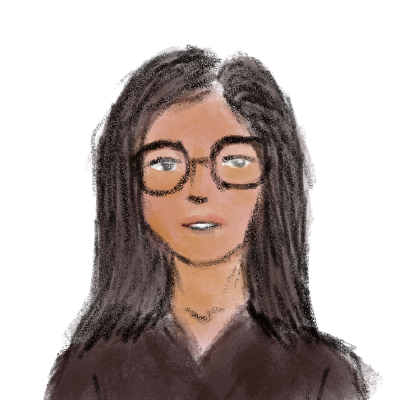

I am a data scientist based in Kathmandu, Nepal. I have been working in this field for 3 years.
When it comes to data, I'm like a modern day Enola Holmes, always on the hunt for the story behind the numbers.
When I'm not cracking codes in the world of data science, you can find me making a difference in the lives of young girls. From mentoring to volunteering, I believe that education is the key to unlocking a brighter future, I'm dedicated to doing my part to make that future a reality.
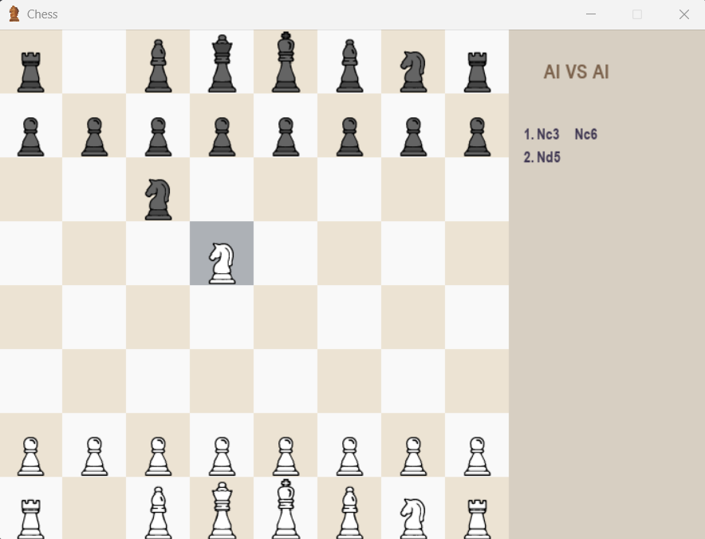
As someone who had no idea on chess, I needed a partner to learn it. What better partner than the AI? So, I taught computer to play chess and in the same way learned it with it.
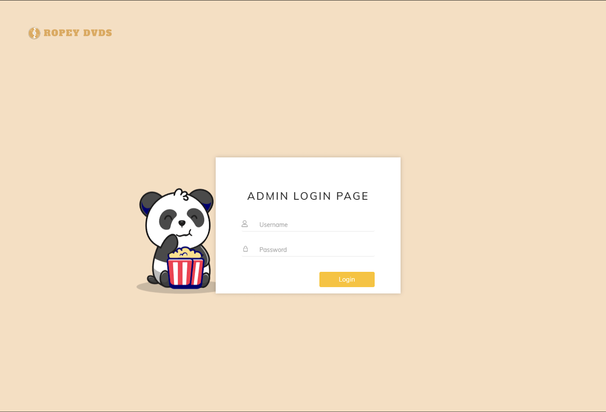
The primary goal of this system is to help Ropey DVDs manage their rented and returned DVDs. It also assists them in managing the details of various members of their store.
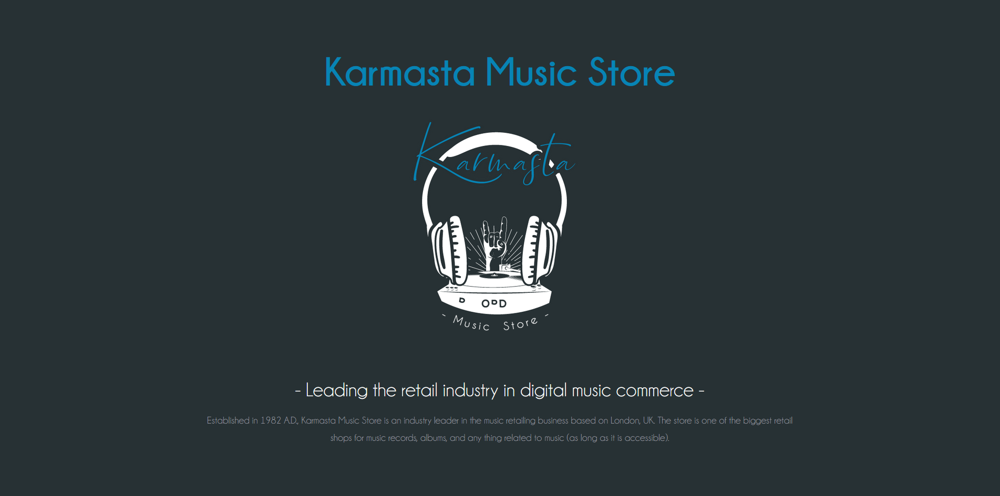
This is a project that designs a system for a music store using XML development. This website is simply a prototype for a hypothetical company looking to build a website.
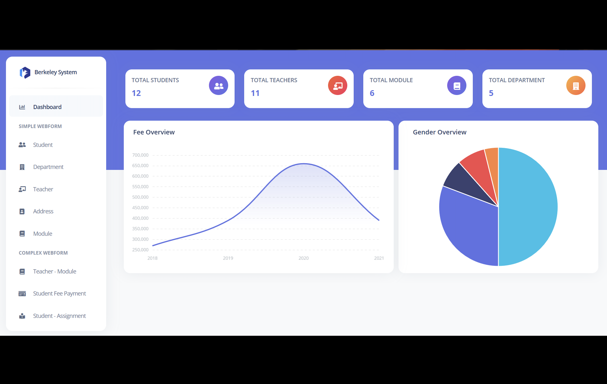
The database system has been developed and designed for a hypothetical college. According to the case study, the college requires the development of a web-based system capable of performing basic CRUD functions.
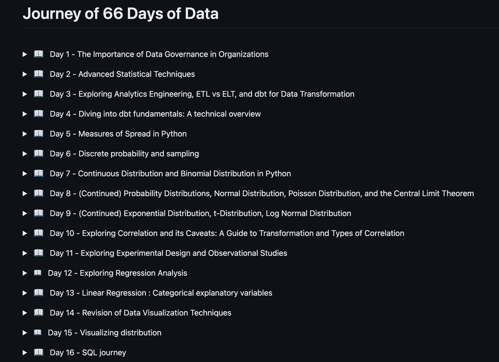
66 Days of Data journey - a personal challenge inspired by Ken Jee to establish great data science habits through daily practice and sharing my work.
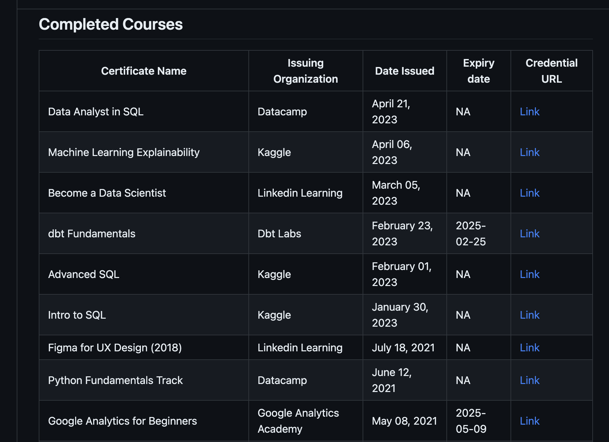
A platform where I park my bragging rights, safely stored for future reference and spontaneous show-and-tell sessions. Welcome to the station where my certificates catch the spotlight.
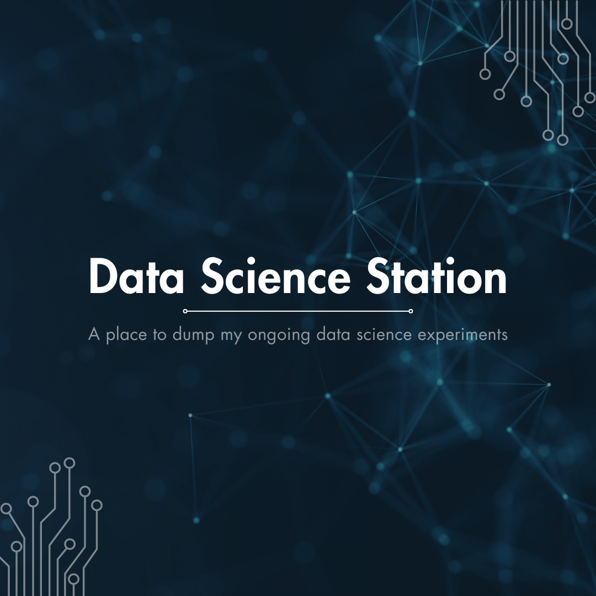
A space where I dump all my ongoing data science experiments from analysis, recommendation engine, visualizations that have yet to be deployed.
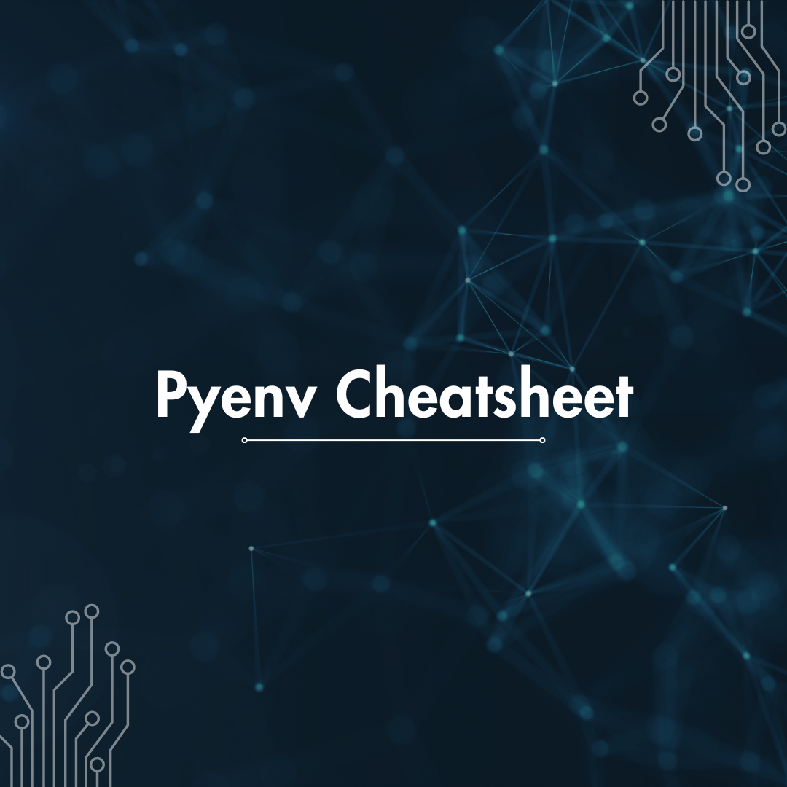
A space for organizing and documenting diverse Python environment experiments using pyenv, encompassing version control, activation, and experimentation with ongoing data science projects.
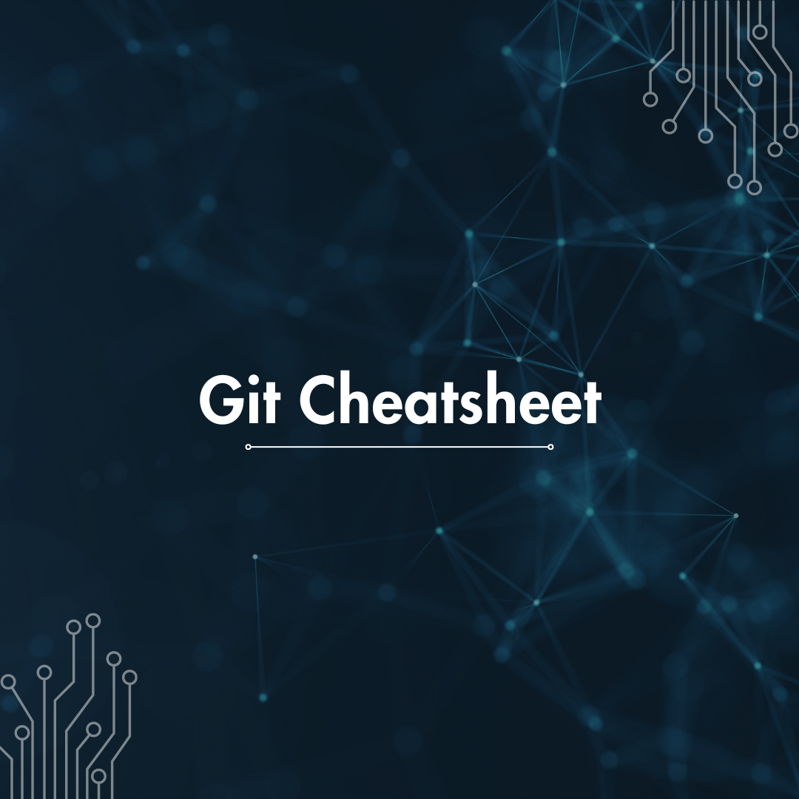
A space for storing essential commands for version control, enabling efficient tracking, branching, merging, and collaboration in the projects.
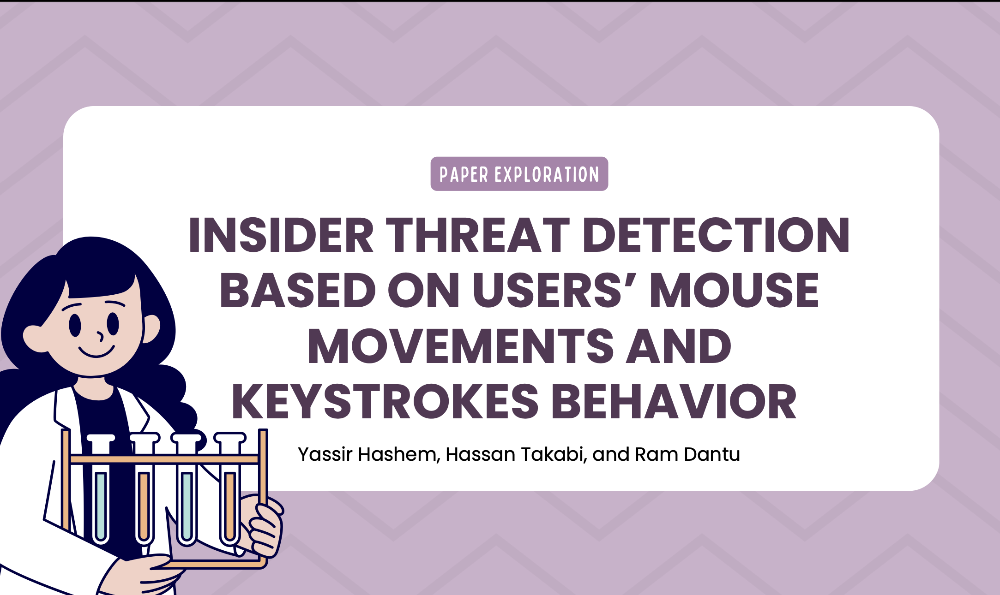
I conducted a comprehensive review of the paper and subsequently created a concise presentation summarizing its key findings.
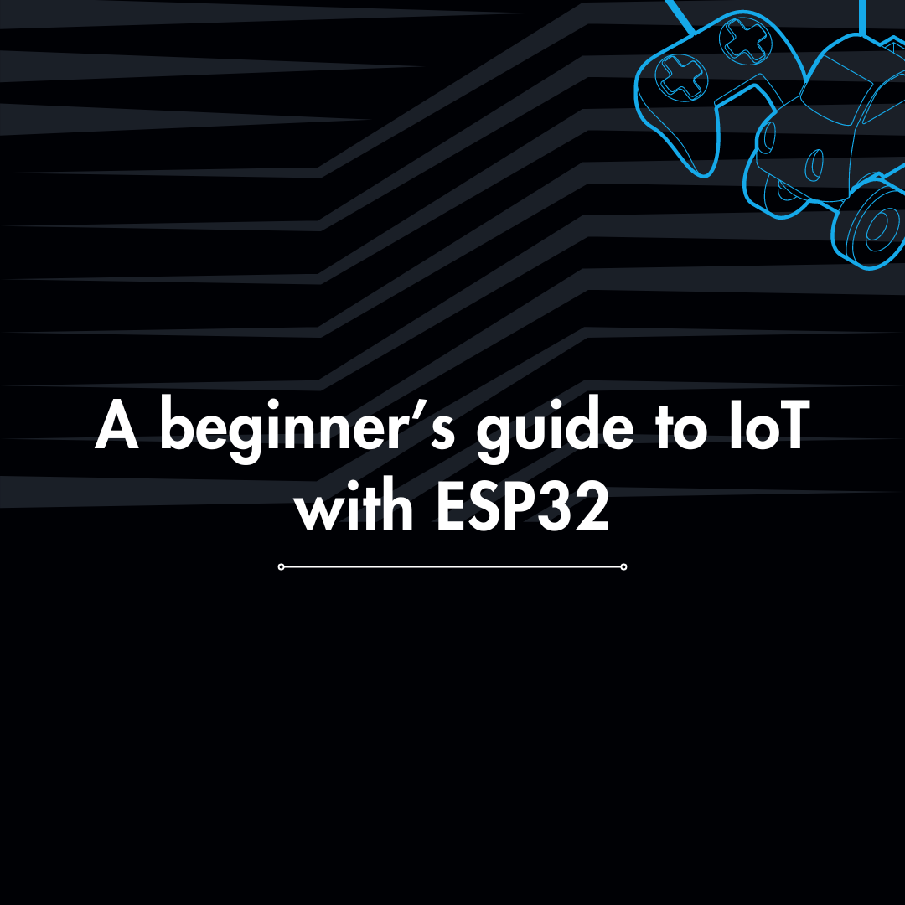
This document serves as a foundational resource for individuals eager to learn about Internet of Things (IoT) using the ESP32 microcontroller.
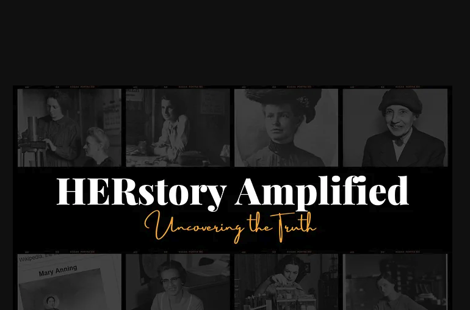
Through this article, I aim to highlight the remarkable contributions of women in the fields of science and technology, acknowledging their invaluable impact on society.
Although I'm not currently looking for any new opportunities, my inbox is always open. Whether you have a question or just want to say hi, I'll try my best to get back to you!